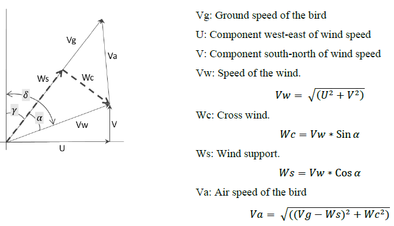
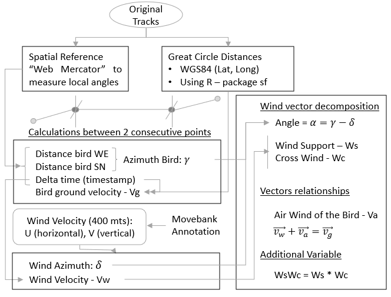
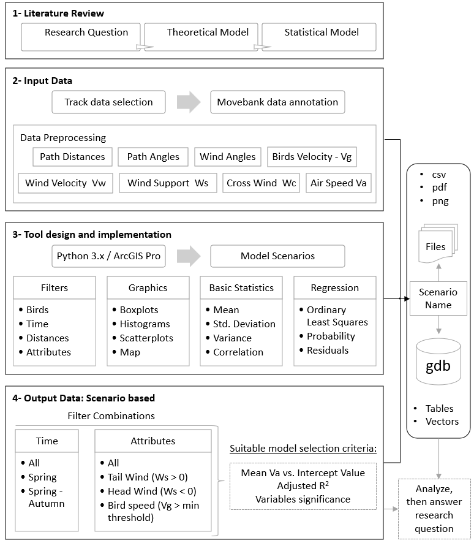
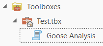
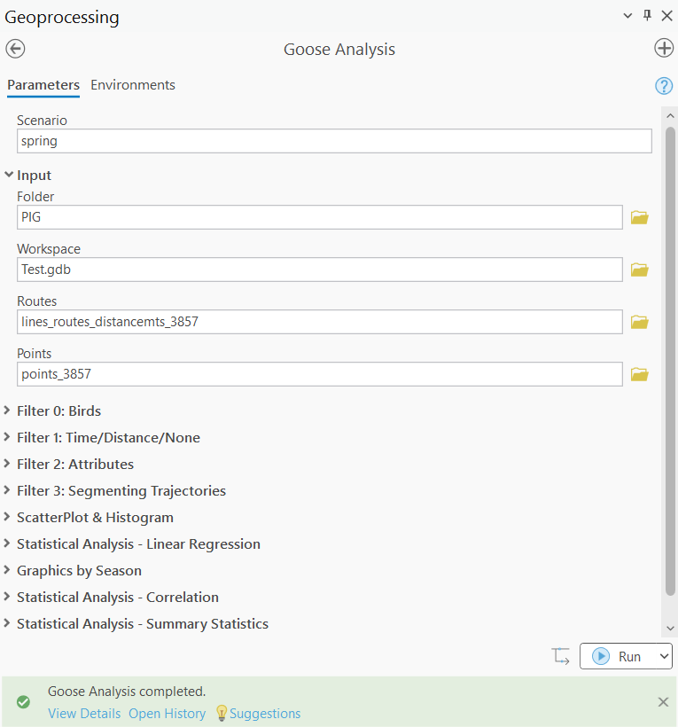

24 Introducción
25 Aprender ArcPy a partir de una aplicación funcional
Nombre: Evaluación de la influencia del viento en el comportamiento de movimiento de las aves migratorias: un estudio de caso del ganso de frente blanca
Objetivos:
- Seguimiento a la migración (referenciación lineal y segmentación dinámica.)
- Analizar la influencia del viento en el comportamiento migratorio de las aves migratorias.
- Generar reportes (mapas y estadísticas)
Pregunta de investigación: ¿Cómo influye la velocidad del viento en el comportamiento de movimiento de las aves migratorias individuales?
Modelo teórico:

- Datos:
- Rutas de las migraciones creadas a partir de los puntos de migración originales (X, Y, fecha con hora). Clase de entidad:
C:\PIG\Test.gdb\lines_routes_distancemts_3857- X: Coordenada este
- Y: Coordenada norte
- M: Distancia acumulada recorrida por el ave (metros)
- Entre dos ubicaciones X, Y de un ganso:
- Distancia recorrida WE (calculado)
- Distancia recorrida SN (calculado)
- Delta de tiempo (calculado)
- Azimuth del ave: \(\gamma\) (calculado)
- Velocidad de desplazamiento del ave: \(V_g\) (calculado)
- Anotación de las ubicaciones con datos de viento a 400 metros (Movebank). Clase de entidad:
C:\PIG\Test.gdb\points_3857- U (anotado: velocidad horizontal)
- V (anotado: velocidad vertical)
- Azimuth del viento: \(\delta\) (calculado)
- Velocidad del viento: \(V_w\) (calculado)
- Todos los demás variables guardadas como atributos
- Descomposición de vectores
- Ángulo entre el ave y el viento: \(\alpha = \gamma - \delta\)
- Soporte del viento \(W_s\) (calculado): Porción de viento que va en la dirección del ave (a favor o en contra del trabajo vuelo)
- Viento cruzado \(W_c\) (calculado): Porción de viento que apunta perpendicular a la dirección del ave.
- Velocidad en el aire del ave: \(V_a\) (calculado)
- Rutas de las migraciones creadas a partir de los puntos de migración originales (X, Y, fecha con hora). Clase de entidad:

A continuación se detalla la estructura consolidada de las variables espaciales, ambientales y cinemáticas que componen el conjunto de datos. Toda la información analizada por la herramienta se encuentra almacenada de forma estática en la geodatabase de trabajo (C:\PIG\Test.gdb).
| Variable | Feature Class | Nombre del campo | Estado en la base de datos / Unidades |
|---|---|---|---|
| Sello de tiempo (fecha y hora) | points_3857 |
timestamp |
Atributo base (Fecha/Hora) |
| Identificador del ave | points_3857 |
bird_name |
Atributo base (Texto) |
| Coordenada este (\(X\)) | lines_routes_distancemts_3857 / points_3857 |
Geometría espacial | Atributo geométrico (Metros) |
| Coordenada norte (\(Y\)) | lines_routes_distancemts_3857 / points_3857 |
Geometría espacial | Atributo geométrico (Metros) |
| Distancia acumulada recorrida (\(M\)) | lines_routes_distancemts_3857 |
distancemts |
Atributo base (Metros) |
| Velocidad de desplazamiento del ave (\(V_g\)) | points_3857 |
vg_mtss |
Precalculado (m/s) |
| Velocidad horizontal del viento (\(U\)) | points_3857 |
u |
Precalculado / Anotado Movebank (m/s) |
| Velocidad vertical del viento (\(V\)) | points_3857 |
v |
Precalculado / Anotado Movebank (m/s) |
| Velocidad absoluta del viento (\(V_w\)) | points_3857 |
vw_mtss |
Precalculado (m/s) |
| Soporte del viento (\(W_s\)) | points_3857 |
ws_mtss |
Precalculado (m/s) |
| Viento cruzado (\(W_c\)) | points_3857 |
wc_mtss |
Precalculado (m/s) |
| Velocidad en el aire del ave (\(V_a\)) | points_3857 |
va_mtss |
Precalculado (m/s) |
Nota: En la base de datos física, campos como
ws_mtss,wc_mtss,vg_mtssyva_mtssson atributos estáticos precalculados. El script de ArcPy no realiza la descomposición vectorial ni los cálculos geométricos intermedios en tiempo de ejecución; su función se limita a la filtración secuencial y al procesamiento estadístico de estos registros existentes.
- Modelo estadístico:
Se plantea un modelo de regresión lineal propuesto por Dodge et al., 2013
\[ V_g = V_a + C_1 \cdot W_s + C_2 \cdot W_c + C_3 \cdot W_s \cdot W_c \tag{25.1}\]
- Metodología:

25.1 Diseño e implementación de un script en una caja de herramientas

Test.tbxScript
C:\PIG\goose_tool.py
Este script de Python está diseñado como una herramienta de geoprocesamiento avanzada para ArcGIS Pro utilizando la librería arcpy. Su objetivo principal es el análisis espacial y estadístico de trayectorias de fauna (específicamente, rutas de vuelo de aves) correlacionando variables de movimiento con variables ambientales como el viento.
El código opera como un flujo de trabajo secuencial estructurado en cuatro componentes principales:
1. Inicialización y lectura de variables (Índices 0 al 32)
El script comienza importando módulos de análisis espacial (arcpy), cálculo matricial (numpy) y generación de gráficos (matplotlib), junto con funciones personalizadas desarrolladas por otros colaboradores. Acto seguido, captura las rutas de las bases de datos geográficas (.gdb), las capas de puntos y líneas, y los criterios de filtrado seleccionados por el usuario en la interfaz de ArcGIS.
2. Arquitectura de filtrado secuencial
El núcleo del procesamiento filtra las coordenadas de los sensores de los animales mediante tres niveles de restricción condicional:
- Filtro 0 (Aves): Si el usuario no desea restringir por rangos físicos, el script extrae los datos puntuales correspondientes únicamente a los nombres o identificadores de las aves seleccionadas en la lista (
birds). - Filtro 1 (Espacio-Temporal): Evalúa si el análisis se acotará por una ventana de tiempo específica (
Time) o por segmentos de distancia acumulada (Distance). Valida que los rangos solicitados existan dentro de los valores máximos y mínimos de la base de datos para cada espécimen. - Filtro 2 (Atributos): Aplica consultas lógicas adicionales sobre variables específicas (por ejemplo, evaluar registros donde la velocidad del viento u otra métrica no sea nula:
is not null).
Los resultados filtrados se convierten en tablas de eventos de ruta y se exportan como nuevas capas vectoriales (Feature Classes) mediante técnicas de segmentación dinámica.
3. Procesamiento estadístico y generación de gráficos
Una vez refinados los datos geoespaciales, el script invoca módulos externos para ejecutar análisis numéricos descriptivos e inferenciales:
- Construye diagramas de dispersión e histogramas combinados (
scatter_histo). - Calcula modelos de regresión lineal múltiple para identificar el impacto de variables independientes (como componentes del viento) sobre la velocidad de avance del ave (
vg_mtss). - Genera resúmenes estadísticos por épocas del año (
Graphics by Season) y exporta diagramas de caja (box plots) y gráficos de barras automáticos en formato PNG y PDF dentro de la carpeta del proyecto.
4. Automatización del mapa y exportación del reporte (Módulo de Damien)
En la fase final, el script interactúa directamente con el proyecto activo de ArcGIS Pro (arcpy.mp.ArcGISProject('current')). Remueve las capas temporales del mapa que no correspondan al análisis actual, carga las nuevas rutas vectoriales junto con los resultados de la regresión, aplica archivos de simbología predefinidos (.lyrx), actualiza los elementos de texto del diseño de página (Layout) y exporta el mapa final como una imagen de alta resolución (300 DPI) para el reporte de investigación.
Propiedades - General
Guardar la herramienta con rutas relativas
Propiedades - Parámetros
En ArcGIS Pro, los parámetros de la interfaz se agregan y configuran manualmente desde la ventana de propiedades de la herramienta en el catálogo del ToolBox (pestaña Parameters).
El script de Python no genera la interfaz de forma automática ni define el orden por sí mismo; únicamente se limita a leer los valores que el usuario introduce en las casillas correspondientes mediante el comando arcpy.GetParameterAsText(índice).
- Correspondencia por índice: El número entre paréntesis
(0, 1, 2...)representa la posición exacta (fila) de la variable en la lista de parámetros configurada en ArcGIS. Por ejemplo,arcpy.GetParameterAsText(0)lee el primer parámetro de la lista,arcpy.GetParameterAsText(1)el segundo, y así sucesivamente hasta llegar al índice32. - Consistencia: Si el orden de los parámetros en la interfaz de ArcGIS no coincide exactamente con el índice numérico especificado en el código, el script fallará al intentar procesar tipos de datos incorrectos.
Lo que se ve en la interfaz:
- 32 parámetros
- Vez el identificador? (columna anterior a la Etiqueta, desde 0 a 32)
- Etiqueta (Label)
- Nombre (Name)
- Tipo de datos (Data Type)
- Tipo (Type)
- Dirección (Direction)
- Descripción (Description) (Vacío)
- Category (Categoría)
- Filtro (Feature Type)
- Dependencia (Dependency)
- Valor por defecto (Default)
- Ambiente (Environment) (Vacío)
- Simbología (Symbology) (Vacío)
Propiedades - Ejecución
Muestra el contenido del script
Propiedades - Validación
Este código es la estructura estándar de la clase ToolValidator de arcpy. Su función principal es controlar el comportamiento dinámico de la interfaz del script en ArcGIS Pro en tiempo real, antes de que el usuario haga clic en “Ejecutar” (Run).
En cortas palabras, sirve para lo siguiente:
__init__: Captura y lee todos los parámetros que configuró en la ventana del script para poder manipularlos.initializeParameters: Define el estado inicial de la interfaz (por ejemplo, que un parámetro aparezca desactivado o con un valor por defecto fijo apenas se abre la herramienta).updateParameters: Gestiona la interacción en tiempo real. Si el usuario cambia el valor del Parámetro A, este método puede habilitar, deshabilitar o filtrar automáticamente las opciones del Parámetro B (comportamiento condicional).updateMessages: Modifica o crea alertas personalizadas (errores o advertencias con un ícono rojo o amarillo) directamente en la interfaz si el usuario ingresa un dato inválido.
Es, esencialmente, el motor que hace que la interfaz de la herramienta sea interactiva e inteligente para evitar que el usuario ejecute el script con datos incorrectos.
Filtros
- Filtro 0: Restringe el conjunto de datos inicial (puntos GPS) según los identificadores de las aves seleccionadas (
birds). - Filtro 1: Aplica una restricción espacio-temporal (ventanas de tiempo o umbrales de distancia acumulada) sobre el resultado del Filtro 0.
- Filtro 2: Evalúa consultas lógicas sobre atributos específicos (ej. valores no nulos), operando de forma secuencial sobre los identificadores remanentes de los filtros previos.
En todos los casos, el flujo genera una lista refinada de identificadores de registros (OBJECTID de C:\PIG\Test.gdb\points_3857) y tablas de eventos. Los análisis estadísticos (regresión y correlación) y los gráficos de dispersión se calculan a partir de los atributos de los puntos que superaron dicha secuencia de filtrado, mientras que la segmentación dinámica genera componentes tanto lineales como puntuales en la base de datos geográfica.
Nota: La tabla de eventos traduce la ubicación de los puntos aprobados en intervalos de distancia acumulada (\(M\)), proyectándolos sobre las rutas de
lines_routes_distancemts_3857para graficar los vectores de migración válidos.
Entradas del usuario
Las entradas de texto del usuario se capturan desde la caja de herramientas de ArcGIS utilizando la función arcpy.GetParameterAsText(ID) según la distribución de índices de la interfaz. Aquellos parámetros que ingresan estructurados como listas o matrices en formato de texto plano (delimitados por corchetes [...]) son evaluados sintácticamente e interpretados como colecciones nativas de Python (listas de cadenas o listas anidadas) mediante la función integrada eval().
A continuación se detallan las especificaciones de cada parámetro, omitiendo las columnas redundantes sin información y traduciendo los componentes semánticos que no alteran la ejecución del código ni las consultas SQL.
| ID | Nombre | Categoría | Valor por defecto |
|---|---|---|---|
| 0 | scenario |
General | spring |
| 1 | folder |
Entrada | Aprx path |
| 2 | workspace |
Entrada | Aprx path/Test.gdb |
| 3 | routes |
Entrada | Aprx path/Test.gdb/lines_routes_distancemts_3857 |
| 4 | points |
Entrada | Aprx path/Test.gdb/points_3857 |
| 5 | field |
Filtro 0: Aves | bird_name |
| 6 | birds |
Filtro 0: Aves | [‘Folkert’, ‘Kees’, ‘Ale’, ‘Jacob’, ‘Niki’, ‘79694’, ‘79698’] |
| 7 | query0type |
Filtro 1: Tiempo/Distancia/Ninguno | Time. Valores posibles: Distance, Time, None |
| 8 | queryrange |
Filtro 1: Tiempo/Distancia/Ninguno | [‘2007-03-01 00:00:00’, ‘2007-06-01 00:00:00’] |
| 9 | field1 |
Filtro 2: Atributos | ws_mtss |
| 10 | whereclause1 |
Filtro 2: Atributos | is not null |
| 11 | field2 |
Filtro 2: Atributos | vg_mtss |
| 12 | whereclause2 |
Filtro 2: Atributos | is not null |
| 13 | segmenttrack |
Filtro 3: Segmentación de trayectorias | false |
| 14 | fieldlistscatterhist |
Gráfico de dispersión e histograma | [‘vg_mtss’,‘ws_mtss’] |
| 15 | horizontallabel |
Gráfico de dispersión e histograma | Bird Ground Velocity - Vg [Mts/Sec] |
| 16 | verticallabel |
Gráfico de dispersión e histograma | Wind Support - Ws [Mts/Sec] |
| 17 | mainlabel |
Gráfico de dispersión e histograma | Ws vs Vg |
| 18 | integeruniqueid |
Análisis estadístico – Regresión lineal | FID |
| 19 | dependentvariable |
Análisis estadístico – Regresión lineal | vg_mtss |
| 20 | independentvariables |
Análisis estadístico – Regresión lineal | [[“vw_mtss”], [“ws_mtss”], [“wc_mtss”]] |
| 21 | fieldsforcursor |
Gráficos por temporada | [‘season’, ‘MEAN_vg_mtss’, ‘bird_name’] |
| 22 | horizontallabel1 |
Gráficos por temporada | Birds - Seasons |
| 23 | verticallabel1 |
Gráficos por temporada | Bird Ground Speed - Vg - [Mts/Sec] |
| 24 | mainlabel1 |
Gráficos por temporada | Average Vg by Bird by Season |
| 25 | fieldsforcursor2 |
Gráficos por temporada | [‘season’, ‘MEAN_vg_mtss’, ‘bird_name’] |
| 26 | verticallabel2 |
Gráficos por temporada | Bird Ground Speed - Vg - [Mts/Sec] |
| 27 | mainlabel2 |
Gráficos por temporada | Average and St. Dev of Vg by Season |
| 28 | fieldlistcorrelation |
Correlación | [‘vw_mtss’,‘ws_mtss’, ‘wc_mtss’, ‘vg_mtss’, ‘va_mtss’] |
| 29 | summarystatistics |
Análisis estadístico – Estadísticas de resumen | vw_mtss MEAN; vw_mtss MEDIAN; vw_mtss STD; vw_mtss VARIANCE; vg_mtss Mean; vg_mtss MEDIAN; vg_mtss STD; vg_mtss VARIANCE; va_mtss Mean; va_mtss MEDIAN; va_mtss STD; va_mtss VARIANCE |
| 30 | fieldlistseasonsum2 |
Análisis estadístico – Resumen por temporada | [“season”,“bird_name”] |
| 31 | summarystatistics2 |
Análisis estadístico – Resumen por temporada | [[“vw_mtss”, “MEAN”], [“vw_mtss”, “STD”], [“vw_mtss”, “VARIANCE”], [“vg_mtss”, “MEAN”], [“vg_mtss”, “STD”], [“vg_mtss”, “VARIANCE”], [“va_mtss”, “MEAN”], [“va_mtss”, “STD”], [“va_mtss”, “VARIANCE”]] |
| 32 | infields |
Filtro 0: Aves | [‘timestamp’, ‘distancemts’, ‘OBJECTID’] |
Interfaz gráfica

Salidas
El procesamiento secuencial de la herramienta genera dos bloques principales de productos: archivos externos de reportes/gráficos organizados en el sistema de archivos del sistema operativo, y elementos vectoriales geográficos estructurados dentro de la geodatabase de trabajo.
1. Archivos en el directorio del escenario
Se crea de forma automática una carpeta en el disco cuyo nombre corresponde a la variable scenario ingresada por el usuario (ej. C:\PIG\spring\). Este directorio consolida los siguientes reportes y gráficos analíticos:
spring_reg_result.pdf: Documento cartográfico y numérico con los resultados formales de la regresión lineal por mínimos cuadrados ordinarios (OLS).spring_correlation.txt: Archivo de texto plano que almacena la matriz de coeficientes de correlación calculada para las variables cinemáticas y ambientales (vw_mtss,ws_mtss,wc_mtss,vg_mtss,va_mtss).spring_summary_stat.csv: Archivo de valores separados por comas que contiene las métricas descriptivas estructuradas (media, mediana, desviación estándar y varianza) de las variables de velocidad.spring_barchartbirdseason.png: Gráfico de barras que representa el promedio de la velocidad de desplazamiento (\(V_g\)) agrupado primariamente por espécimen y segmentado por temporada climática.spring_barchartseasonbird.png: Gráfico de barras que invierte los ejes del producto anterior, mostrando el promedio de \(V_g\) agrupado por temporada y segmentado por individuo.spring_boxplotseason.png: Diagrama de caja y bigotes que expone la distribución, promedios y desviaciones estándar de \(V_g\) a través de las estaciones del año.spring_scatterplot_histo.png: Gráfico compuesto que integra un diagrama de dispersión y sus respectivos histogramas marginales para evaluar la relación empírica entre el soporte del viento (\(W_s\)) y la velocidad de desplazamiento del ave (\(V_g\)).spring_map.png: Exportación cartográfica final del diseño de página (Layout) activo en la sesión de ArcGIS Pro a una resolución nativa de 300 DPI, incluyendo la actualización dinámica de los textos del escenario.
2. Objetos de la geodatabase de trabajo (C:\PIG\Test.gdb)
El script valida la existencia o crea un Feature Dataset denominado con el nombre del escenario (ej. C:\PIG\Test.gdb\spring). Toda la información geoespacial resultante se almacena bajo este contenedor utilizando el sistema de referencia de los puntos originales:
Tablas de eventos independientes (Almacenadas en la raíz de la
.gdb):spring_birds_lineevents_table_filter0: Registros de medidas de distancia inicial y final para las aves seleccionadas (Filtro 0).spring_time_lineevents_table_filter1ospring_distance_lineevents_table_filter1: Intervalos espacio-temporales calculados según la ruta parametrizada (Filtro 1).spring_attributes_lineevents_table_filter2: Eventos lineales remanentes tras la validación de cláusulas lógicas (Filtro 2).spring_attributes_pointevents_table_filter2: Eventos puntuales específicos que cumplieron las condiciones del Filtro 2.spring_season_sum_stat: Tabla de atributos que consolida los resúmenes estadísticos estacionales requeridos por las funciones gráficas de Matplotlib.spring_reg_coeffyspring_reg_diag_op: Tablas con los coeficientes estimados y los diagnósticos estadísticos de la regresión lineal.Clases de entidad vectoriales (Dentro del Feature Dataset
spring):spring_birds_lineevents_fc_filter0: Capa de líneas generada por segmentación dinámica que representa las trayectorias base de las aves seleccionadas.spring_time_lineevents_fc_filter1ospring_distance_lineevents_fc_filter1: Segmentos lineales de vuelo restringidos por ventanas de tiempo o umbrales de distancia.spring_attributes_lineevents_fc_filter2: Elementos lineales finales que superaron las restricciones por atributos.spring_attributes_pointevents_fc_filter2: Entidades de puntos que geo-localizan los registros específicos que satisfacen todas las condiciones de la consulta analítica.spring_regression: Clase de entidad de puntos derivada directamente del modelo OLS de Som, la cual inyecta los residuales estandarizados en la tabla de atributos y se carga automáticamente en el mapa activo bajo el nombre operacional deRegression.
Scripts
El núcleo analítico de la herramienta opera mediante una arquitectura modular. Un script principal de control se encarga de la orquestación de la interfaz y la persistencia de datos en ArcGIS Pro, mientras que una serie de scripts secundarios especializados ejecutan los filtros algorítmicos, la econometría de la regresión lineal y la renderización de la reportería gráfica.
goose_tool.py
- Función principal: Script principal de control. Orquesta el flujo completo de la herramienta. Lee los parámetros de la interfaz de ArcGIS, gestiona los entornos vectoriales (
arcpy.env.workspace), invoca secuencialmente los filtros lógicos, coordina los análisis estadísticos y automatiza la actualización simbólica y exportación del mapa final en ArcGIS Pro. - Entradas principales: Parámetros de la interfaz del ToolBox (Índices
0al32), incluyendo bases de datos cartográficas (points_3857,lines_routes_distancemts_3857), criterios de selección y configuraciones de gráficos. - Salidas principales: Estructuras vectoriales consolidadas dentro del Feature Dataset de la geodatabase, archivos de reportes en el disco (
.pdf,.csv,.txt) e imágenes PNG analíticas.
pass_birdlist_return_numpyarray.py
- Función principal: Módulo del Filtro 0. Extrae de forma selectiva los registros espaciales de la entidad de puntos correspondientes exclusivamente a la lista de especímenes (
birds) parametrizada por el usuario. - Entradas principales: Clase de entidad
points_3857, campo identificador (bird_name) y lista de aves seleccionadas. - Salidas principales: Matriz estructurada de datos (
NumPyArray), campo para el siguiente filtro (OBJECTID) y arreglo de IDs remanentes.
pass_twodistances_return_twotimes_tagIdentList_numpyarray.py
- Función principal: Módulo del Filtro 1 (Opción Distancia). Restringe los registros basándose en umbrales físicos de distancia acumulada recorrida (\(M\)). Interseca las posiciones con las medidas lineales de la ruta para extraer ventanas temporales de vuelo válidas.
- Entradas principales: Clase de entidad
points_3857, identificadores filtrados del paso previo y el rango numérico de distancias. - Salidas principales: Arreglo estructurado de datos, identificador de campo y lista indexada de puntos que cumplen la condición de distancia.
pass_twotimes_return_twodistances_tagIdentList_numpyarray.py
- Función principal: Módulo del Filtro 1 (Opción Tiempo). Restringe las trayectorias de las aves aplicando una ventana temporal estricta de inicio y fin (conversión y validación mediante objetos
datetime). - Entradas principales: Clase de entidad
points_3857, identificadores filtrados del paso previo y el rango cronológico seleccionado. - Salidas principales: Arreglo estructurado de datos, identificador de campo y lista indexada de puntos que se encuentran dentro del intervalo de tiempo.
filter_by_attributes_structured_array.py
- Función principal: Módulo del Filtro 2. Aplica consultas lógicas y cláusulas WHERE de SQL (ej. validación de valores no nulos) sobre atributos cinemáticos o ambientales específicos utilizando arreglos estructurados de NumPy.
- Entradas principales: Clase de entidad
points_3857, listado de identificadores del filtro anterior, campos a evaluar (field1,field2) y condiciones sintácticas (whereclause1,whereclause2). - Salidas principales: Arreglo refinado de datos de tipo punto y línea (
eventtype), cadena de consulta SQL ejecutada (myWhere) y conteo total de registros válidos (myTotal).
scatter_histo.py
- Función principal: Módulo gráfico de dispersión. Renderiza y exporta un gráfico analítico bidimensional correlacionando dos variables junto con sus histogramas de frecuencia marginales en los ejes.
- Entradas principales: Parámetros de configuración gráfica de la interfaz (campos, etiquetas de ejes, título del escenario) y la tabla de puntos que superó los filtros.
- Salidas principales: Archivo de imagen de alta resolución
[escenario]_scatterplot_histo.pngguardado en la carpeta del proyecto.
linear_regression.py
- Función principal: Módulo econométrico (OLS). Ejecuta el modelo de regresión lineal múltiple para validar la ecuación teórica de Dodge et al., 2013, estimando el impacto de los componentes del viento sobre la velocidad del ave.
- Entradas principales: Identificador único (
FID), variable dependiente (vg_mtss), lista de variables independientes (vw_mtss,ws_mtss,wc_mtss) y la tabla de puntos filtrada. - Salidas principales: Tablas de salida en la geodatabase con coeficientes (
_reg_coeff) y diagnósticos (_reg_diag_op), reporte cartográfico[escenario]_reg_result.pdfy la capa espacialspring_regressioncon residuales estandarizados.
correlation.py
- Función principal: Módulo de correlación. Construye la matriz de coeficientes de correlación de Pearson para evaluar la dependencia estadística lineal entre todas las variables cinemáticas y del viento ingresadas.
- Entradas principales: Lista de campos numéricos a correlacionar (
fieldlistcorrelation) y la tabla de datos vectoriales filtrados de la geodatabase. - Salidas principales: Archivo de texto plano estructurado
[escenario]_correlation.txtconteniendo la matriz numérica indexada.
summary_stats.py
- Función principal: Módulo de estadística descriptiva. Calcula agregaciones estadísticas tradicionales sobre las variables de velocidad del conjunto de datos global que superó los filtros secuenciales.
- Entradas principales: Configuración sintáctica de campos y funciones estadísticas deseas (
summarystatistics), y la tabla de puntos vectoriales. - Salidas principales: Archivo estructurado de base de datos
[escenario]_summary_stat.csvcon los valores de media, mediana, desviación estándar y varianza.
season_summary.py
- Función principal: Módulo de agregación estacional. Agrupa las observaciones temporales y espaciales en función de las estaciones climáticas del año, calculando promedios y desviaciones estándar para cada combinación ave-temporada.
- Entradas principales: Campos de agrupación (
["season","bird_name"]), funciones estadísticas y la clase de entidad de puntos vectoriales. - Salidas principales: Tabla física de la geodatabase de trabajo
[escenario]_season_sum_stat, la cual actúa como insumo mandatorio para los gráficos de Matplotlib.
barChartSeasBS.py
- Función principal: Módulo de gráficos de barras estacionales. Contiene las funciones optimizadas
createBarChartBirdsSeasonycreateBarChartSeasonBirds. Normaliza las dimensiones de los arreglos mediante la funciónfixArrayspara evitar categorías vacías y dibuja las barras agrupadas. - Entradas principales: Tabla agregada de la geodatabase
_season_sum_stat, campos de ordenamiento, etiquetas de diseño y títulos configurados en la interfaz. - Salidas principales: Dos archivos de imagen PNG:
[escenario]_barchartbirdseason.pngy[escenario]_barchartseasonbird.png.
boxplotWV_Season.py
- Función principal: Módulo de diagramas de caja. Estructura los datos estacionales para compilar diagramas de caja y bigotes que exponen gráficamente la dispersión de las velocidades del aire y de desplazamiento.
- Entradas principales: Tabla agregada de la geodatabase
_season_sum_stat, campos numéricos de velocidad y configuraciones estéticas de etiquetas. - Salidas principales: Archivo de imagen analítica
[escenario]_boxplotseason.pngexportado al directorio del escenario.
min_max_distance_by_fielddelimiter.py / min_max_timestamp_by_fielddelimiter.py
- Función principal: Módulos auxiliares de validación. Funciones de soporte que extraen los valores de cota superior e inferior (máximos y mínimos) de distancia y tiempo presentes en los datos de cada individuo para validar la consistencia de los rangos ingresados por el usuario.
- Entradas principales: Clase de entidad
points_3857, campo delimitador y listas de campos de análisis. - Salidas principales: Diccionarios e índices de valores únicos (
unique_values), y tuplas con los límites absolutos de tiempo o distancia por ave.
Fundamentos de automatización con ArcPy
Para comprender la ejecución del código fuente, es necesario identificar los mecanismos de integración geoespacial y optimización de memoria que implementa la herramienta:
Interoperabilidad entre capas GIS y estructuras de memoria
El script mitiga los problemas de rendimiento tradicionales del geoprocesamiento secuencial evitando la lectura directa en disco en cada iteración. Mediante el uso de cursores optimizados (arcpy.da.SearchCursor) y funciones de conversión matricial, los atributos de las clases de entidad vectoriales se transforman en arreglos estructurados de NumPy (NumPyArray). Esto permite que los Filtros 0, 1 y 2 ejecuten operaciones lógicas y relacionales masivas directamente en la memoria RAM del sistema antes de escribir los resultados finales en la geodatabase de trabajo.
Dinámica de la referenciación lineal (LRS)
El seguimiento cartográfico de las trayectorias de migración se fundamenta en la segmentación dinámica de variables espaciales. La clase de entidad lines_routes_distancemts_3857 almacena rutas que integran un componente de medida lineal (\(M\)) en cada uno de sus vértices. Al procesar las coordenadas de avistamiento puntuales, el script calcula intervalos de distancia acumulada (medida inicial y medida final). Posteriormente, invoca la función arcpy.MakeRouteEventLayer_lr, la cual proyecta dinámicamente las tablas de eventos de líneas y puntos sobre el esqueleto de las rutas de referencia, renderizando las zonas de vuelo específicas sin necesidad de crear archivos vectoriales físicos intermedios.
Gestión y exportación del entorno cartográfico (arcpy.mp)
La fase de generación de reportes visuales interactúa directamente con la interfaz gráfica de ArcGIS Pro a través del módulo de administración de mapas. El script toma el control del proyecto activo ('current'), purga la tabla de contenido removiendo capas obsoletas, añade los nuevos Feature Classes resultantes del análisis econométrico, aplica archivos de simbología estandarizados (.lyrx) para homogeneizar la visualización de los residuales de la regresión, actualiza dinámicamente las cadenas de texto del diseño de página (Layout) y exporta de forma automatizada el mapa final en alta resolución.
25.2 Retos de aprendizaje autónomo
Esta guía práctica le permitirá dominar la librería arcpy analizando y ejecutando scripts reales sobre la base de datos geográfica del proyecto del ganso de frente blanca.
Configuración inicial del entorno
Para ejecutar los siguientes retos en un Jupyter Notebook externo, asegúrese de iniciar cada sesión importando la librería y configurando el espacio de trabajo base mediante el siguiente bloque:
import arcpy
import os
# Configuración del entorno global
arcpy.env.workspace = r"C:\PIG\Test.gdb"
arcpy.env.overwriteOutput = True
print("Entorno de ArcPy inicializado correctamente.")Fase 1: Fundamentos y exploración del Workspace (Preguntas 1 a 5)
Pregunta 1: ¿Cómo listar y verificar la existencia de las capas base en una Geodatabase?
- Concepto: Antes de realizar cualquier operación espacial, es necesario inspeccionar el catálogo de datos. ArcPy utiliza funciones de listado que actúan como filtros según el tipo de geometría.
- Reto: Elabore un script que liste todas las clases de entidad (Feature Classes) de tipo punto y línea presentes en la raíz (stand alone feature classes) de
Test.gdb.
# Solución a Pregunta 1
import arcpy
arcpy.env.workspace = r"C:\PIG\Test.gdb"
# Listar Feature Classes de tipo Punto y Línea
puntos = arcpy.ListFeatureClasses(feature_type="Point")
lineas = arcpy.ListFeatureClasses(feature_type="Line")
print("Clases de entidad de puntos:", puntos)
print("Clases de entidad de líneas:", lineas)Pregunta 2: ¿Cómo describir las propiedades de un Feature Class y su Sistema de Referencia Espacial?
- Concepto: La función
arcpy.Describe()devuelve un objeto de propiedades dinámicas. A partir de este objeto se puede interrogar el tipo de geometría, el campo de clave primaria y el sistema de coordenadas. - Reto: Acceda a las propiedades de
points_3857e imprima su tipo de forma y el nombre de su proyección.
# Solución a Pregunta 2
import arcpy
capa_puntos = "points_3857"
desc = arcpy.Describe(capa_puntos)
print(f"Nombre de la entidad: {desc.name}")
print(f"Tipo de Geometría: {desc.shapeType}")
print(f"Campo ID interno: {desc.OIDFieldName}")
print(f"Sistema de Coordenadas: {desc.spatialReference.name}")
print(f"Unidades lineales: {desc.spatialReference.linearUnitName}")Pregunta 3: ¿Cómo verificar y crear un Feature Dataset para organizar datos por escenarios?
- Concepto: Un Feature Dataset es un contenedor físico dentro de la
.gdbque obliga a todas las capas internas a compartir el mismo sistema de referencia espacial. El script principal lo utiliza para aislar los resultados de cada escenario (ej.spring). - Reto: Valide si existe un Feature Dataset llamado
autumn. Si no existe, créelo utilizando el sistema de referencia depoints_3857.
# Solución a Pregunta 3
import arcpy
import os
gdb_path = r"C:\PIG\Test.gdb"
dataset_name = "autumn"
referencia_capa = os.path.join(gdb_path, "points_3857")
dataset_completo = os.path.join(gdb_path, dataset_name)
if arcpy.Exists(dataset_completo):
print(f"El Feature Dataset '{dataset_name}' ya existe en la base de datos.")
else:
# Extaer la referencia espacial de la capa base
spatial_ref = arcpy.Describe(referencia_capa).spatialReference
# Crear el contenedor
arcpy.management.CreateFeatureDataset(gdb_path, dataset_name, spatial_reference=spatial_ref)
print(f"Feature Dataset '{dataset_name}' creado exitosamente.")Pregunta 4: ¿Cómo listar los campos de una tabla y conocer sus tipos de datos?
- Concepto: La función
arcpy.ListFields()devuelve una lista de objetos de campo. Esto permite validar si una columna es de tipo numérico, texto o fecha antes de realizar consultas SQL o cálculos matemáticos. - Reto: Inspeccione la capa
points_3857y extraiga el nombre y tipo de los primeros 5 campos.
# Solución a Pregunta 4
import arcpy
campos = arcpy.ListFields("points_3857")
print("Estructura de campos (Primeros 5):")
for campo in campos[:5]:
print(f"Campo: {campo.name} | Tipo: {campo.type} | Longitud: {campo.length}")Pregunta 5: ¿Cómo realizar un conteo rápido de registros filtrados sin cargar los datos en memoria?
- Concepto:
arcpy.management.GetCount()devuelve el número de filas de una tabla o capa. Es una operación extremadamente rápida porque se ejecuta directamente en el motor de la base de datos. - Reto: Determine cuántos registros totales existen en la capa
points_3857.
# Solución a Pregunta 5
import arcpy
resultado_conteo = arcpy.management.GetCount("points_3857")
total_filas = int(resultado_conteo.getOutput(0))
print(f"La capa 'points_3857' contiene un total de {total_filas} registros puntuales.")Fase 2: Filtrado lógico y Consultas Atributivas (Preguntas 6 a 10)
Pregunta 6: ¿Cómo crear una capa temporal en memoria (Feature Layer) para aplicar filtros?
- Concepto: Las clases de entidad físicas en disco no aceptan filtros directos. Se debe generar una capa virtual en la memoria de ArcGIS utilizando
arcpy.management.MakeFeatureLayer. Esta capa actúa como una vista de base de datos. - Reto: Cree una capa temporal llamada
lyr_puntosa partir depoints_3857.
# Solución a Pregunta 6
import arcpy
capa_entrada = "points_3857"
capa_temporal = "lyr_puntos"
# Liberar la capa si ya existía en la sesión
if arcpy.Exists(capa_temporal):
arcpy.management.Delete(capa_temporal)
arcpy.management.MakeFeatureLayer(capa_entrada, capa_temporal)
print(f"Capa temporal '{capa_temporal}' creada en la memoria de la sesión.")Pregunta 7: ¿Cómo aplicar una selección por atributos basada en sintaxis SQL?
- Concepto: Una vez creada la capa temporal, se utiliza
arcpy.management.SelectLayerByAttributepasándole una cadena de selección SQL válida de acuerdo con el motor de la Geodatabase. - Reto: Filtre la capa temporal del reto anterior para conservar únicamente los registros del ave ‘Folkert’.
# Solución a Pregunta 7
import arcpy
# Se asume que 'lyr_puntos' fue creada en el reto 6
clausula_sql = "bird_name = 'Folkert'"
arcpy.management.SelectLayerByAttribute("lyr_puntos", "NEW_SELECTION", clausula_sql)
conteo_filtrado = arcpy.management.GetCount("lyr_puntos")
print(f"Registros encontrados para el ave Folkert: {conteo_filtrado}")Pregunta 8: ¿Cómo exportar permanentemente los datos filtrados a un nuevo Feature Class?
- Concepto: Las selecciones sobre capas temporales se pierden al cerrar la sesión de Python. Para guardarlas físicamente, se utiliza
arcpy.management.CopyFeatures. - Reto: Exporte los puntos filtrados de ‘Folkert’ hacia una nueva capa física llamada
points_folkertdentro de la raíz de la.gdb.
# Solución a Pregunta 8
import arcpy
import os
gdb_path = r"C:\PIG\Test.gdb"
salida_fisica = os.path.join(gdb_path, "points_folkert")
# Copiar las entidades seleccionadas de la capa temporal
arcpy.management.CopyFeatures("lyr_puntos", salida_fisica)
print(f"Datos exportados físicamente a: {salida_fisica}")Pregunta 9: ¿Cómo construir una consulta SQL compuesta para el Filtro 2 (Atributos Ambientales)?
- Concepto: El Filtro 2 del script evalúa de forma secuencial condiciones de calidad de datos y umbrales cinemáticos. Las consultas en Geodatabases de archivos (File Geodatabases) exigen una correspondencia exacta con el esquema físico del disco, donde la validación de registros vacíos se realiza mediante la expresión
IS NOT NULL. - Reto: Seleccione los registros de
points_3857donde la velocidad absoluta del viento (vw_mtss) no sea nula Y la velocidad de desplazamiento del ganso corregida geodésicamente (vg_mtss_gcd) sea estrictamente mayor a 4 m/s (umbral para filtrar ubicaciones estacionarias).
# Solución a la Pregunta 9
import arcpy
# Configurar el espacio de trabajo real
arcpy.env.workspace = r"C:\PIG\Test.gdb"
# 1. Crear la capa temporal en memoria
if arcpy.Exists("lyr_filtro_ambiental"):
arcpy.management.Delete("lyr_filtro_ambiental")
arcpy.management.MakeFeatureLayer("points_3857", "lyr_filtro_ambiental")
# 2. Sentencia compuesta utilizando los nombres de campo reales verificados
sql_compuesta = "vw_mtss IS NOT NULL AND vg_mtss_gcd > 4"
try:
# 3. Ejecutar la selección atributiva sobre la capa temporal
arcpy.management.SelectLayerByAttribute("lyr_filtro_ambiental", "NEW_SELECTION", sql_compuesta)
# 4. Obtener el conteo de registros que cumplen la condición
resultado_conteo = arcpy.management.GetCount("lyr_filtro_ambiental")
total_puntos = int(resultado_conteo.getOutput(0))
print(f"Éxito: Consulta SQL ejecutada correctamente.")
print(f"Puntos que cumplen con el criterio de vuelo activo con datos de viento: {total_puntos}")
except arcpy.ExecuteError:
print("Error de geoprocesamiento de ArcGIS:")
print(arcpy.GetMessages(2))
except Exception as e:
print(f"Error general del script: {str(e)}")Pregunta 10: ¿Cómo limpiar selecciones y eliminar capas temporales de la memoria?
- Concepto: Dejar capas virtuales activas satura la memoria caché de ArcGIS y bloquea los archivos de la Geodatabase (
.lock), impidiendo que otros procesos borren o editen las tablas. El comandoarcpy.management.Deleteremueve el objeto virtual de la memoria. - Reto: Remueva de la sesión las capas de trabajo generadas en los retos anteriores.
# Solución a Pregunta 10
import arcpy
capas_a_borrar = ["lyr_puntos", "lyr_filtro_ambiental"]
for capa in capas_a_borrar:
if arcpy.Exists(capa):
arcpy.management.Delete(capa)
print(f"Capa '{capa}' removida con éxito.")Fase 3: Acceso Eficiente a Datos y Módulo arcpy.da (Preguntas 11 a 15)
Pregunta 11: ¿Cómo leer atributos específicos utilizando un cursor de búsqueda (SearchCursor)?
- Concepto: El módulo de acceso a datos (
arcpy.da) está escrito en C++ y es hasta 10 veces más rápido que los cursores clásicos. UnSearchCursordevuelve un iterador de tuplas basado estrictamente en una lista de campos definida, optimizando el uso de memoria RAM. - Reto: Lea los campos
bird_nameyvg_mtss_gcdde los primeros 10 registros depoints_3857e imprímalos en pantalla.
# Solución a la Pregunta 11
import arcpy
# Asegurar que el entorno apunte a la base de datos del proyecto
arcpy.env.workspace = r"C:\PIG\Test.gdb"
capa = "points_3857"
campos_analisis = ["bird_name", "vg_mtss_gcd"]
print("Extrayendo registros mediante cursores indexados (con control de nulos):")
# Abrir el cursor de lectura estructurada del módulo de acceso a datos (da)
with arcpy.da.SearchCursor(capa, campos_analisis) as cursor:
contador = 0
for fila in cursor:
nombre_ave = fila[0]
velocidad = fila[1]
# Validar si el registro de velocidad contiene un valor nulo (None)
if velocidad is not None:
print(f"Ave: {nombre_ave} | Velocidad de avance: {velocidad:.2f} m/s")
else:
print(f"Ave: {nombre_ave} | Velocidad de avance: [DATO NULO / SIN REGISTRO]")
contador += 1
if contador == 10:
breakPregunta 12: ¿Cómo extraer valores únicos de una columna utilizando un cursor y estructuras de Python?
- Concepto: El script necesita conocer qué aves existen en la base de datos para construir los bucles de filtrado espacial. Combinar un
SearchCursorcon el tipo de datos nativosetde Python elimina automáticamente los duplicados. - Reto: Extraiga de forma única la lista de todos los nombres de gansos presentes en
points_3857(Función equivalente aunique_valuesdel script).
# Solución a Pregunta 12
import arcpy
capa = "points_3857"
campo_identificador = "bird_name"
aves_unicas = set()
with arcpy.da.SearchCursor(capa, [campo_identificador]) as cursor:
for fila in cursor:
# fila[0] contiene el valor de la columna 'bird_name'
if fila[0] is not null:
aves_unicas.add(fila[0])
print("Lista consolidada de aves en el dataset:", list(aves_unicas))Pregunta 13: ¿Cómo convertir una tabla geográfica directamente en una matriz de NumPy?
- Concepto: Para aplicar estadística analítica avanzada o gráficos con Matplotlib (como los histogramas de Hassan u Omar), es ineficiente recorrer filas una por una. La función
arcpy.da.FeatureClassToNumPyArrayconvierte una tabla GIS en una matriz estructurada en la memoria caché. - Reto: Convierta los campos
vg_mtss_gcdyws_mtssdepoints_3857en una matriz NumPy y calcule el promedio global de velocidad utilizando funciones matemáticas nativas de Python.
# Solución a la Pregunta 13 (Opción A)
# Ignorar los nulos en el cálculo: reemplazar np.mean() por np.nanmean()
import arcpy
import numpy as np
arcpy.env.workspace = r"C:\PIG\Test.gdb"
capa = "points_3857"
campos_matriz = ["vg_mtss_gcd", "ws_mtss"]
# Extracción directa de la tabla geográfica a la memoria RAM [cite: 13, 21, 153]
matriz_datos = arcpy.da.FeatureClassToNumPyArray(capa, campos_matriz)
# Extraer el arreglo de la variable de interés
velocidades = matriz_datos["vg_mtss_gcd"]
# CORRECCIÓN: Usar nanmean para ignorar los valores vacíos en la operación matemática
promedio_velocidad = np.nanmean(velocidades)
print(f"Matriz cargada en memoria. Total registros matriciales: {len(matriz_datos)}")
print(f"Velocidad promedio calculada (omitiendo nulos): {promedio_velocidad:.4f} m/s")# Solución a la Pregunta 13 (Opción B)
# Filtrar la matriz con una máscara lógica: np.isnan()
import arcpy
import numpy as np
arcpy.env.workspace = r"C:\PIG\Test.gdb"
capa = "points_3857"
campos_matriz = ["vg_mtss_gcd", "ws_mtss"]
matriz_datos = arcpy.da.FeatureClassToNumPyArray(capa, campos_matriz)
velocidades_originales = matriz_datos["vg_mtss_gcd"]
# Construir una máscara lógica para conservar solo índices numéricos válidos
mascara_validos = ~np.isnan(velocidades_originales)
velocidades_limpias = velocidades_originales[mascara_validos]
promedio_velocidad = np.mean(velocidades_limpias)
print(f"Total registros extraídos de la gdb: {len(matriz_datos)}")
print(f"Registros válidos filtrados en memoria RAM: {len(velocidades_limpias)}")
print(f"Velocidad promedio calculada en matriz limpia: {promedio_velocidad:.4f} m/s")Pregunta 14: ¿Cómo crear una tabla física en la Geodatabase a partir de una matriz de datos en memoria?
- Concepto: Es la operación inversa al reto anterior. Cuando un script procesa algoritmos matemáticos complejos en memoria (como los filtros de aves puntuales), utiliza
arcpy.da.NumPyArrayToTablepara plasmar esa matriz como una tabla física estructurada en el disco de la base de datos. - Reto: Tome la matriz generada en el paso anterior y guárdela como una tabla fija llamada
tb_resumen_numpyen la raíz deTest.gdb.
# Solución a Pregunta 14
import arcpy
import os
# Se asume que 'matriz_datos' está cargada desde el reto 13
ruta_tabla_salida = os.path.join(arcpy.env.workspace, "tb_resumen_numpy")
if arcpy.Exists(ruta_tabla_salida):
arcpy.management.Delete(ruta_tabla_salida)
# Convertir estructura de memoria a tabla indexada GIS
arcpy.da.NumPyArrayToTable(matriz_datos, ruta_tabla_salida)
print(f"Tabla de la Geodatabase creada desde NumPy: {ruta_tabla_salida}")Pregunta 15: ¿Cómo modificar registros específicos utilizando un cursor de actualización (UpdateCursor)?
- Concepto:
arcpy.da.UpdateCursorpermite modificar campos existentes o eliminar filas de forma selectiva de acuerdo con una condición espacial u atributiva, consolidando los cambios de forma inmediata. - Reto: Cree un script que evalúe si la velocidad de desplazamiento es nula o menor a 0, y actualice dicho registro asignándole un valor base de 0.0.
# Solución a Pregunta 15
import arcpy
capa_edicion = "points_folkert" # Usamos la capa creada en el reto 8
campos_edicion = ["vg_mtss_gcd"]
with arcpy.da.UpdateCursor(capa_edicion, campos_edicion) as cursor:
modificaciones = 0
for fila in cursor:
# Validar si el registro tiene inconsistencias o es nulo
if fila[0] is None or fila[0] < 0:
fila[0] = 0.0 # Asignar valor corregido
cursor.updateRow(fila) # Persistir el cambio en la base de datos
modificaciones += 1
print(f"Corrección finalizada. Se actualizaron {modificaciones} registros en el disco.")Fase 4: Referenciación Lineal y Segmentación Dinámica (Preguntas 16 a 18)
Pregunta 16: ¿Cómo inspeccionar las propiedades de una ruta y sus campos de referenciación lineal (LRS)?
Concepto: En flujos de trabajo avanzados de geoprocesamiento, nunca se debe asumir la integridad o persistencia del esquema de una base de datos externa. Antes de interrogar las propiedades lógicas de referenciación lineal de una ruta (como el método
routeIDFieldNamede una capa), es un estándar de desarrollo listar e inspeccionar primero las columnas físicas del disco mediantearcpy.ListFields(). Esto permite cruzar la información geométrica (como la presencia de medidas \(M\) en los vértices mediantehasM) con la existencia real de los campos clave en la tabla de atributos, evitando excepciones de tipoAttributeErroren los procesos posteriores de segmentación dinámica.Reto: Desarrolle un script de auditoría que primero extraiga los nombres de los campos reales de la capa de líneas
lines_routes_distancemts_3857, valide si la geometría almacena coordenadas de medida (\(M\)) y finalmente confirme si el campo identificador de las trayectorias de vuelo se encuentra indexado y disponible en el catálogo.
# Solución a la Pregunta 16 (Metodología de Inspección Segura)
import arcpy
# Asegurar que el entorno apunte a la base de datos del proyecto
arcpy.env.workspace = r"C:\PIG\Test.gdb"
ruta_capa = "lines_routes_distancemts_3857"
print(f"Paso 1: Inspeccionando campos reales en el disco para '{ruta_capa}'...")
# Extraer y listar los nombres exactos de los campos de la tabla de atributos física
campos_reales = [campo.name for campo in arcpy.ListFields(ruta_capa)]
print(f"-> Columnas detectadas en la tabla de atributos: {campos_reales}")
print("\nPaso 2: Validando propiedades de referenciación lineal (LRS) en memoria...")
# Crear la capa temporal necesaria para obligar a ArcPy a instanciar propiedades de LRS
capa_temporal = "lyr_rutas_lrs"
if arcpy.Exists(capa_temporal):
arcpy.management.Delete(capa_temporal)
arcpy.management.MakeFeatureLayer(ruta_capa, capa_temporal)
desc_ruta = arcpy.Describe(capa_temporal)
# Validar la presencia del componente M y la existencia real del campo clave
if desc_ruta.hasM:
print(f"-> Éxito: '{desc_ruta.name}' posee coordenadas M de distancia acumulada.")
# Verificar de forma segura si el objeto de descripción posee el método extendido de rutas
if hasattr(desc_ruta, "routeIDFieldName"):
campo_clave = desc_ruta.routeIDFieldName
# Cruzar el resultado del catálogo con la lista física de campos en disco
if campo_clave in campos_reales:
print(f"-> Campo clave validado y existente en las columnas: '{campo_clave}'")
else:
print(f"-> Advertencia: El catálogo apunta a '{campo_clave}', pero el campo no existe físicamente.")
else:
# Control de contingencia para esquemas estáticos o Feature Classes no registrados como capas de rutas completas
if "bird_name" in campos_reales:
print("-> Campo de claves de ruta (identificado por análisis de esquema): 'bird_name'")
else:
print("-> Error: No se pudo determinar el campo clave de enrutamiento en el esquema.")
else:
print(f"-> Error: La capa '{desc_ruta.name}' es una línea estándar sin propiedades de medida M.")
# Limpiar el entorno de memoria RAM de la sesión
arcpy.management.Delete(capa_temporal)Pregunta 17: ¿Cómo programar segmentación dinámica desde tablas sintéticas y automatizar su carga cartográfica en la TOC?
Concepto: La segmentación dinámica no requiere bases de datos preexistentes; puede gobernarse por completo en tiempo de ejecución. El proceso exige la creación de una estructura tabular que contenga un campo identificador de ruta (Route ID) y dos campos numéricos que definan el intervalo de medidas físicas (Medida Inicial \(M_{i}\) y Medida Final \(M_{f}\)). Mediante el uso combinado de
arcpy.da.InsertCursorpara el poblamiento de registros y el módulo de automatización cartográficaarcpy.mp, es posible modelar tramos de vuelo bajo demanda e inyectar de forma inmediata tanto los datos tabulares como las capas geográficas resultantes en la Tabla de Contenido (TOC) del mapa activo del proyecto.Reto: Desarrolle un script autónomo que cree una tabla de eventos vacía llamada
tb_eventos_sinteticadentro de la Geodatabase. Instancie campos para almacenar el nombre del ave y los intervalos de distancia. Inserte tres registros distribuidos para tres aves distintas (Folkert, Niki y Ale), imprima el resultado en la consola para auditar los datos, genere la capa virtual de segmentación sobre la ruta base y cargue tanto la tabla como la nueva capa lineal segmentada en el mapa activo de la sesión de ArcGIS Pro.
# Solución a la Pregunta 17 (Uso de Memoria RAM, LRS Dinámica y Sincronización Física en TOC)
import arcpy
import os
# 1. Configuración de rutas e infraestructura de la Geodatabase
gdb_path = r"C:\PIG\Test.gdb"
arcpy.env.workspace = gdb_path
arcpy.env.overwriteOutput = True
# Definición de nombres del escenario
nombre_tabla = "tb_eventos_sintetica"
nombre_fc_salida = "spring_eventos_sinteticos_fc"
# Estructuración de rutas físicas y virtuales
ruta_tabla_memoria = os.path.join("memory", nombre_tabla)
ruta_tabla_fisica = os.path.join(gdb_path, nombre_tabla)
capa_rutas = os.path.join(gdb_path, "lines_routes_distancemts_3857")
ruta_fc_fisico = os.path.join(gdb_path, nombre_fc_salida)
capa_virtual_lrs = "lyr_eventos_virtual_memoria"
print("Paso 0: Purga avanzada de redundancias y bloqueos en la TOC de ArcGIS Pro...")
try:
aprx = arcpy.mp.ArcGISProject("current")
mapa_activo = aprx.listMaps()[0]
# CORRECCIÓN: Bucle iterativo estricto para eliminar TODAS las tablas duplicadas por nombre
tablas_en_toc = mapa_activo.listTables()
tablas_removidas = 0
for t in reversed(tablas_en_toc):
if t.name == nombre_tabla:
mapa_activo.removeTable(t)
tablas_removidas += 1
if tablas_removidas > 0:
print(f" -> Éxito: Se purgaron {tablas_removidas} registros de tabla duplicados de la TOC.")
# Limpiar capas espaciales preexistentes con el mismo nombre en la TOC
for l in mapa_activo.listLayers(nombre_fc_salida):
mapa_activo.removeLayer(l)
print(f" -> Capa espacial obsoleta '{nombre_fc_salida}' removida de la TOC.")
except Exception as e:
print(f" -> Nota en purga de TOC: {str(e)}")
# Limpieza preventiva en el almacenamiento del disco
if arcpy.Exists(ruta_tabla_memoria): arcpy.management.Delete(ruta_tabla_memoria)
if arcpy.Exists(ruta_tabla_fisica): arcpy.management.Delete(ruta_tabla_fisica)
if arcpy.Exists(ruta_fc_fisico): arcpy.management.Delete(ruta_fc_fisico)
# 2. Creación e instanciación de la tabla de eventos en la memoria RAM
arcpy.management.CreateTable("memory", nombre_tabla)
# 3. Definición del esquema estructural LRS
arcpy.management.AddField(ruta_tabla_memoria, "bird_name", "TEXT", field_length=50)
arcpy.management.AddField(ruta_tabla_memoria, "initialdistancemts", "DOUBLE")
arcpy.management.AddField(ruta_tabla_memoria, "finaldistancemts", "DOUBLE")
# 4. Poblamiento de datos sintéticos mediante InsertCursor en la memoria RAM
campos_insertar = ["bird_name", "initialdistancemts", "finaldistancemts"]
datos_vuelo = [
("Ale", 500000.0, 1000000.0),
("Folkert", 600000.0, 700000.0),
("Niki", 800000.0, 900000.0)
]
with arcpy.da.InsertCursor(ruta_tabla_memoria, campos_insertar) as icursor:
for fila in datos_vuelo:
icursor.insertRow(fila)
print("Paso 1: Tabla de eventos sintética poblada con éxito en la memoria RAM.")
# 5. Lectura e impresión analítica de la tabla de memoria en la consola
print("\nPaso 2: Inspección y auditoría de los registros en 'memory\\\\tb_eventos_sintetica':")
with arcpy.da.SearchCursor(ruta_tabla_memoria, campos_insertar) as scursor:
for i, fila in enumerate(scursor):
print(f" -> Registro [{i}]: Ave = {fila[0]} | Tramo M = {fila[1]:,.1f} mts hasta {fila[2]:,.1f} mts")
# 6. Ejecución del motor de Segmentación Dinámica en el entorno del Notebook
propiedades_evento = "bird_name LINE initialdistancemts finaldistancemts"
arcpy.lr.MakeRouteEventLayer(
in_routes=capa_rutas,
route_id_field="bird_name",
in_table=ruta_tabla_memoria,
in_event_properties=propiedades_evento,
out_layer=capa_virtual_lrs
)
# 7. Romper el aislamiento: Materializar la capa virtual a un Feature Class físico en disco
arcpy.management.CopyFeatures(capa_virtual_lrs, ruta_fc_fisico)
print(f"\nPaso 3: Segmentación consolidada físicamente en la Geodatabase: '{nombre_fc_salida}'")
# 8. Automatización cartográfica: Carga directa de la Tabla y el Feature Class de líneas a la TOC
try:
aprx = arcpy.mp.ArcGISProject("current")
mapa_activo = aprx.listMaps()[0]
print("\nPaso 4: Sincronizando capas físicas con la interfaz de ArcGIS Pro...")
# Escribir la tabla definitiva en disco para que sea visible en la interfaz
arcpy.management.CopyRows(ruta_tabla_memoria, ruta_tabla_fisica)
# Cargar el objeto de tabla al mapa activo (una única vez, garantizado tras la purga del Paso 0)
tabla_objeto = arcpy.mp.Table(ruta_tabla_fisica)
mapa_activo.addTable(tabla_objeto)
print(f" -> Éxito: Tabla física '{nombre_tabla}' inyectada en Standalone Tables.")
# Cargar el Feature Class de líneas resultante al bloque cartográfico del mapa
capa_lineas_objeto = arcpy.mp.LayerFile(ruta_fc_fisico) if hasattr(arcpy.mp, "LayerFile") else ruta_fc_fisico
mapa_activo.addLayer(arcpy.mp.Layer(ruta_fc_fisico) if hasattr(arcpy.mp, "Layer") else ruta_fc_fisico)
# Refrescar la vista activa para forzar el renderizado en la pantalla
aprx.save()
print(f" -> Éxito: Feature Class de líneas segmentadas '{nombre_fc_salida}' cargado en la TOC.")
except IndexError:
print("\n[!] Nota: El script se ejecutó por fuera de una sesión interactiva de ArcGIS Pro.")
print("Los datos físicos se guardaron en la Geodatabase. Al abrir 'Test.aprx' los cambios estarán consolidados.")
except Exception as e:
print(f"\nError en la inyección cartográfica de la TOC: {str(e)}")
# 9. Purga final de la memoria RAM del sistema
arcpy.management.Delete(ruta_tabla_memoria)
arcpy.management.Delete(capa_virtual_lrs)Fase 5: Automatización Cartográfica de Proyectos y Layouts (Preguntas 18 a 19)
Pregunta 18: ¿Cómo iterar y modificar dinámicamente los elementos de texto de un Layout de impresión?
- Concepto: El módulo de mapeo (
arcpy.mp) permite acceder a las plantillas de diseño del mapa para automatizar la generación de reportes corporativos en serie. Al iterar sobre los objetos de texto (TEXT_ELEMENT), se pueden inyectar variables dinámicas como el nombre del escenario analizado. - Reto: Localice un elemento de texto llamado
mytextdentro de los diseños del proyecto activo y modifique su contenido.
# Solución a Pregunta 18
import arcpy
# Conectar al proyecto de ArcGIS Pro abierto en la sesión actual
aprx = arcpy.mp.ArcGISProject("current")
# Recorrer todos los Layouts de impresión configurados en el catálogo
for diseño in aprx.listLayouts():
# Buscar elementos de tipo Texto dentro del diseño actual
for elemento in diseño.listElements("TEXT_ELEMENT"):
if elemento.name == "mytext":
# Inyectar el nuevo encabezado técnico dinámicamente
elemento.text = "Reporte de Análisis de Migración de Fauna\nEscenario Automático: Spring"
print(f"Elemento '{elemento.name}' actualizado en el diseño '{diseño.name}'.")
# Guardar los cambios estructurales en el archivo del proyecto .aprx
aprx.save()Pregunta 19: ¿Cómo reencuadrar el mapa (Pan to Extent) automáticamente a los resultados del análisis y exportar a PNG?
- Concepto: Es la culminación lógica del procesamiento (Módulo de Damien). Para evitar mapas vacíos o desalineados, el script calcula los límites geográficos absolutos de la capa vectorial resultante de la regresión (
getLayerExtent), centra el marco del mapa principal (Map Frame) en ese recuadro geométrico exacto y realiza la exportación física a alta resolución. - Reto: Tome el primer Layout del proyecto, enfoque la cámara automáticamente sobre la capa vectorial
Regressiony exporte el producto cartográfico final a una imagen en el disco.
# Solución a Pregunta 19
import arcpy
import os
aprx = arcpy.mp.ArcGISProject("current")
directorio_salida = r"C:\PIG\spring"
archivo_imagen = os.path.join(directorio_salida, "spring_map_final.png")
# 1. Acceder al mapa principal de la vista activa y localizar la capa de interés
mapa = aprx.listMaps()[0]
capa_referencia = mapa.listLayers("Regression")[0]
# 2. Acceder al Layout de impresión y aislar el contenedor del mapa (Map Frame)
diseño_final = aprx.listLayouts()[0]
marco_mapa = diseño_final.listElements("MAPFRAME_ELEMENT")[0]
# 3. Operación de encuadre geográfico automatizado
extension_capa = marco_mapa.getLayerExtent(capa_referencia)
marco_mapa.panToExtent(extension_capa)
print("Cámara del marco cartográfico reajustada a los límites del modelo de regresión.")
# 4. Exportación nativa a disco con control de densidad de píxeles
if not os.path.exists(directorio_salida):
os.makedirs(directorio_salida)
if arcpy.Exists(archivo_imagen):
arcpy.management.Delete(archivo_imagen)
diseño_final.exportToPNG(archivo_imagen, resolution=300)
print(f"Proceso completado exitosamente. Mapa impreso en resolución editorial (300 DPI) en: {archivo_imagen}")Para dar cierre a este bloque didáctico en el documento Quarto, se propone una sección final que incentive el pensamiento crítico y el desarrollo de lógica de programación geoespacial avanzada en los estudiantes de posgrado.
Siguiendo la misma estructura metodológica, se plantean 5 retos adicionales sin resolver. Cada enunciado describe un problema real del flujo de trabajo de investigación, detalla los componentes de ArcPy requeridos y establece los criterios de aceptación que el código propuesto por el alumno debe cumplir.
25.3 Retos de profundización autónoma (Sin resolver)
Esta sección reúne desafíos diseñados para que el estudiante integre variables ambientales, controle errores de topología lineal y automatice salidas gráficas avanzadas sin asistencia estructurada.
Reto 1: Extracción y exportación automatizada de tramos críticos por individuo
- Contexto de investigación: Para analizar las zonas de fatiga en la migración, el equipo de investigación requiere aislar en archivos independientes las trayectorias donde los gansos redujeron su velocidad por debajo de un umbral crítico.
- Componentes de ArcPy sugeridos:
arcpy.da.SearchCursor(),arcpy.management.SelectLayerByAttribute(),arcpy.management.CopyFeatures(). - Enunciado del reto: Desarrolle un script que extraiga de forma única la lista de aves presentes en
spring_eventos_sinteticos_fc. Para cada ave identificada, el script debe evaluar dinámicamente sus registros, seleccionar aquellos tramos donde la velocidad de avance (vg_mtss_gcd) sea menor a 5 m/s y exportar dichos segmentos a un nuevo Feature Class independiente dentro de la Geodatabase, nombrado bajo el patróncritico_[nombre_ave].
Reto 2: Auditoría topológica de medidas M en redes de transporte de fauna
- Contexto de investigación: Los errores geométricos en la digitalización de rutas pueden generar inconsistencias lógicas en el LRS, como medidas iniciales mayores a las finales o valores de calibración negativos.
- Componentes de ArcPy sugeridos:
arcpy.da.UpdateCursor(),arcpy.management.AddField(). - Enunciado del reto: Escriba un script de control de calidad que añada un campo de tipo texto llamado
lrs_statusa la tablatb_eventos_sintetica. El algoritmo debe recorrer la tabla fila por fila y evaluar de forma lógica: siinitialdistancemtses mayor o igual afinaldistancemts, o si alguno de los dos valores es negativo, debe registrar la cadena"ERROR". De lo contrario, debe registrar"VALIDO". El script debe imprimir al final el conteo total de anomalías detectadas.
Reto 3: Modelado de intersecciones espaciales con matrices indexadas
- Contexto de investigación: La validación cruzada entre modelos matriciales de NumPy y capas vectoriales de ArcGIS es mandatoria para asegurar la reproducibilidad estadística del proyecto.
- Componentes de ArcPy sugeridos:
arcpy.da.FeatureClassToNumPyArray(), funciones de álgebra matricial deNumPy. - Enunciado del reto: Cargue la capa de puntos completa
points_3857en una matriz estructurada de NumPy utilizando únicamente los camposvg_mtss_gcd(velocidad del ganso) yws_mtss(velocidad de apoyo del viento). Utilizando operaciones de indexación booleana puras de NumPy (sin cursores de ArcPy), determine cuántos registros poseen simultáneamente una velocidad de ganso superior al promedio global de la población Y una velocidad de viento inferior a 3 m/s.
Reto 4: Integración cinemática multitemporal (Filtro 3 de calidad)
- Contexto de investigación: El Filtro 3 del protocolo de investigación exige discriminar los vectores de vuelo diurnos de los nocturnos antes de ejecutar las regresiones lineales del escenario.
- Componentes de ArcPy sugeridos:
arcpy.management.MakeFeatureLayer(), operadores de selección SQL para manejo de fechas y marcas de tiempo. - Enunciado del reto: Construya una consulta SQL compuesta para aplicar sobre la capa
points_3857que aísle los registros pertenecientes al mes de mayo, cuya hora de captura se encuentre en el intervalo diurno (entre las 06:00 y las 18:00 horas) y que registren una dirección de avance válida (alphavg_dir_bird_e IS NOT NULL). El script debe crear la capa temporal y reportar la densidad de puntos resultantes respecto al total del dataset.
Reto 5: Automatización de reportes cartográficos multiescala en PDF
- Contexto de investigación: La entrega de resultados a las agencias de conservación ambiental exige la generación en serie de salidas gráficas de alta resolución, evitando la manipulación manual de la interfaz de ArcGIS Pro.
- Componentes de ArcPy sugeridos:
arcpy.mp.ArcGISProject(),arcpy.mp.MapFrame(), métodos de exportación deLayout. - Enunciado del reto: Desarrolle un script de automatización cartográfica que acceda al proyecto activo. El código debe iterar sobre los elementos del Layout, localizar el marco de mapa principal (Map Frame) y centrar la cámara de forma secuencial en cada uno de los tramos generados en el Reto 1 (
critico_[nombre_ave]), aplicando un ajuste de extensión automático con un margen (buffer) del 10%. Finalmente, el script debe exportar cada encuadre como un archivo PDF independiente a 300 DPI en la rutaC:\PIG\spring\.